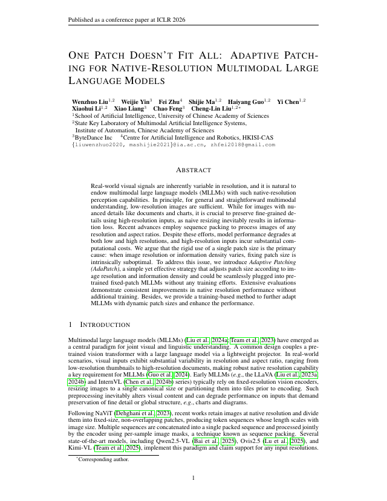
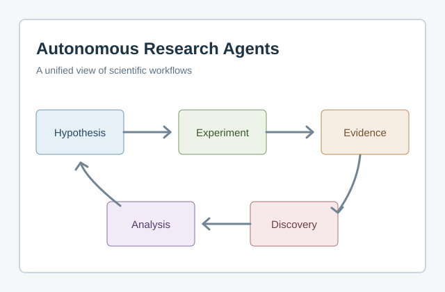
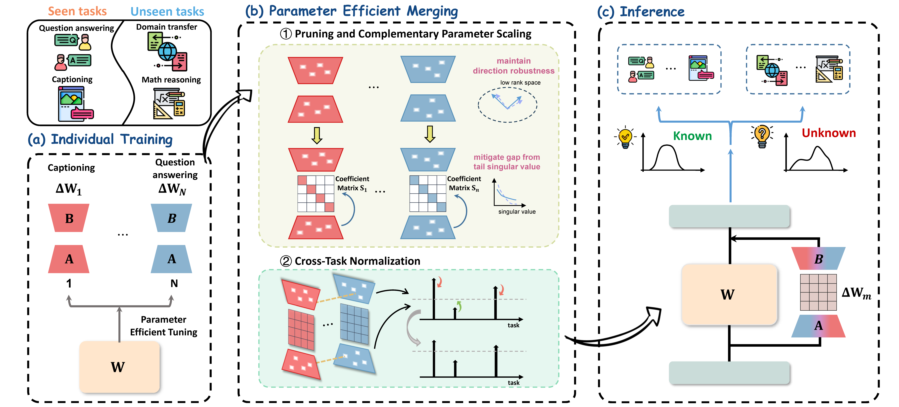
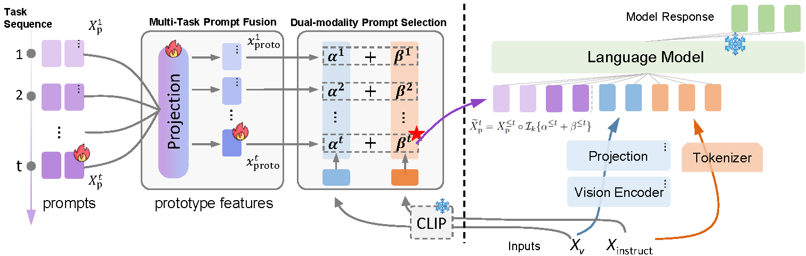
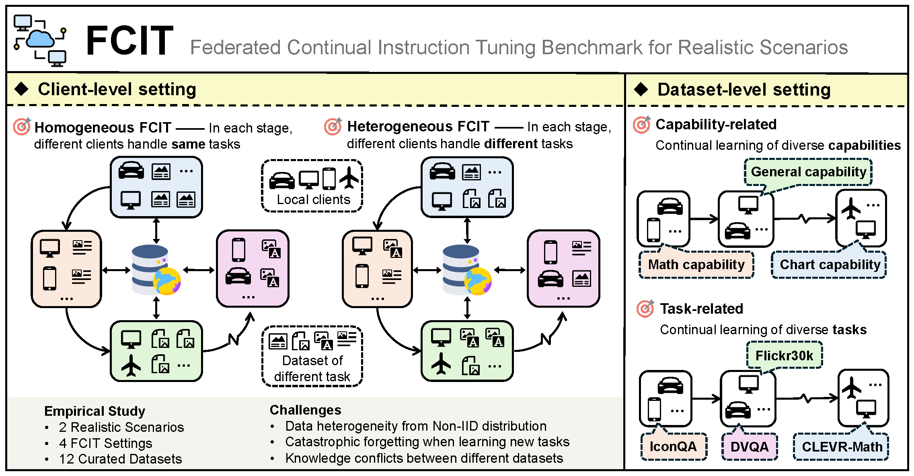
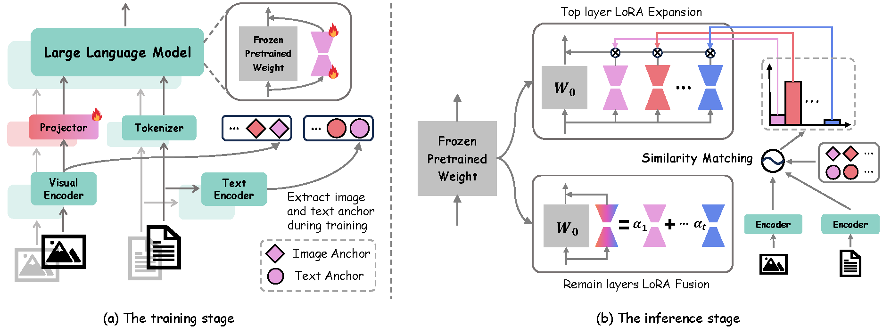
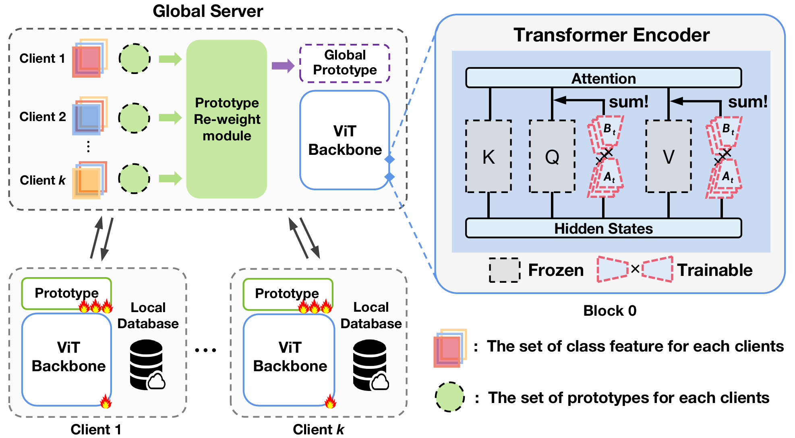
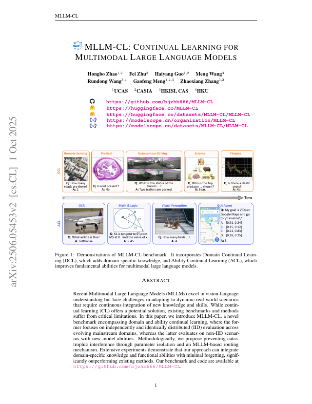
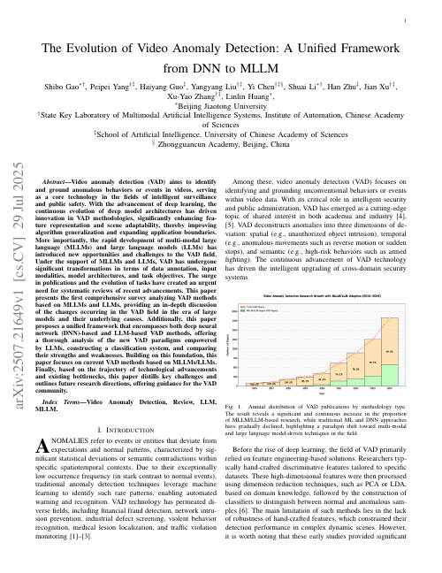

My research interests include continual learning, long-horizon agent harness design and evaluation, and self-evolving agents. I am particularly interested in building reliable agentic workflows that adapt alongside foundation models and enable richer multimodal applications.
[2026.07] Our work Denser ≠ Better on continual post-training is released.
[2026.04] We release CL-VISTA and MCITlib-v3, extending continual instruction tuning from image-text to video-text settings.
[2026.04] One paper (AdaPatch) is accepted to ICLR 2026.
[2025.09] One paper (RobustMerge) is accepted to NeurIPS 2025 as a spotlight.
[2025.08] One paper (ModalPrompt) is accepted to EMNLP 2025.
[2025.06] One paper (FCIT) is accepted to ICCV 2025.
[2025.05] One paper (HiDe-LLaVA) is accepted to ACL 2025.
[2024.07] One paper (PILoRA) is accepted to ECCV 2024.
Publications
* indicates equal contribution

One Patch Doesn't Fit All: Adaptive Patching for Native-Resolution Multimodal Large Language Models
Wenzhuo Liu, Weijie Yin, Fei Zhu, Shijie Ma, Haiyang Guo, Yi Chen, Xiao-Hui Li, Xiao Liang, Chao Feng, Cheng-Lin Liu
International Conference on Learning Representations (ICLR), 2026
Paper /
PDF

The Hitchhiker's Guide to Autonomous Research: A Survey of Scientific Agents
Xinming Wang, Jian Xu, Aslan H. Feng, Yi Chen, Haiyang Guo, Fei Zhu, Yuanqi Shao, Minsi Ren, Hongzhu Yi, et al.
IEEE Transactions on Pattern Analysis and Machine Intelligence (TPAMI), 2026
Paper

RobustMerge: Parameter-Efficient Model Merging for MLLMs with Direction Robustness
Fanhu Zeng, Haiyang Guo, Fei Zhu, Li Shen, Hao Tang
Neural Information Processing Systems (NeurIPS spotlight), 2025
arXiv

ModalPrompt: Dual-Modality Guided Prompt for Continual Learning of Large Multimodal Models
Fanhu Zeng, Fei Zhu, Haiyang Guo, Xu-Yao Zhang, Cheng-Lin Liu
Empirical Methods in Natural Language Processing (EMNLP), 2025
arXiv / Code

Federated Continual Instruction Tuning Haiyang Guo, Fanhu Zeng, Fei Zhu, Wenzhuo Liu, Da-Han Wang, Jian Xu, Xu-Yao Zhang, Cheng-Lin Liu
International Conference on Computer Vision (ICCV), 2025
arXiv / Code

HiDe-LLaVA: Hierarchical Decoupling for Continual Instruction Tuning of Multimodal Large Language Model Haiyang Guo*, Fanhu Zeng*, Ziwei Xiang, Fei Zhu, Da-Han Wang, Xu-Yao Zhang, Cheng-Lin Liu
Association for Computational Linguistics (ACL), 2025
Paper / arXiv / Code

PILoRA: Prototype Guided Incremental LoRA for Federated Class-Incremental Learning Haiyang Guo, Fei Zhu, Wenzhuo Liu, Xu-Yao Zhang, Cheng-Lin Liu
European Conference on Computer Vision (ECCV), 2024
Paper / arXiv / Code
MCITlib: Multimodal Continual Instruction Tuning Library and Benchmark Haiyang Guo, Fei Zhu, Hongbo Zhao, Fanhu Zeng, Wenzhuo Liu, Shijie Ma, Da-Han Wang, Xu-Yao Zhang
Workshop on Multimodal Continual Learning, International Conference on Computer Vision (ICCV), 2025
arXiv / Code
CL-VISTA: Benchmarking Continual Learning in Video Large Language Models Haiyang Guo, Yichen Shi, Fei Zhu, Wenzhuo Liu, Hongbo Zhao, Fanhu Zeng, Shijie Ma, Da-Han Wang, Xu-Yao Zhang
arXiv preprint, 2026
arXiv /
Code

MLLM-CL: Continual Learning for Multimodal Large Language Models
Hongbo Zhao, Fei Zhu, Haiyang Guo, Meng Wang, Rundong Wang, Gaofeng Meng, Zhaoxiang Zhang
arXiv preprint, 2025
arXiv /
Code

The Evolution of Video Anomaly Detection: A Unified Framework from DNN to MLLM
Shibo Gao, Peipei Yang, Haiyang Guo, Yangyang Liu, Yi Chen, Shuai Li, Han Zhu, Jian Xu, Xu-Yao Zhang, Linlin Huang
arXiv preprint, 2025
arXiv
{kind=link}